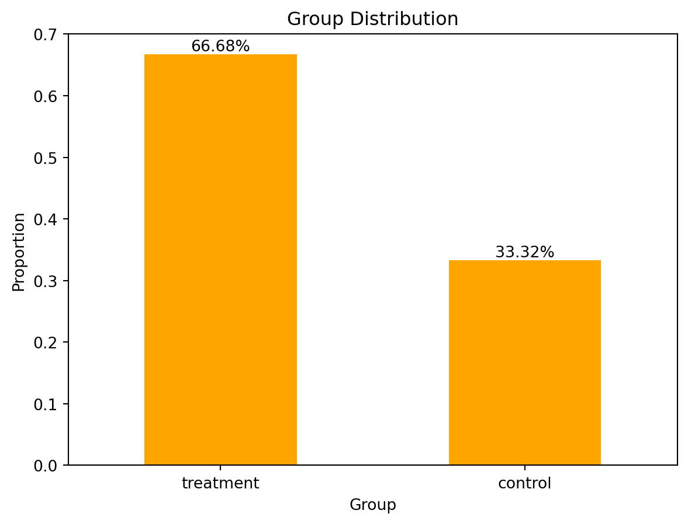
A Replication of Karlan and List (2007)
Introduction
Dean Karlan at Yale and John List at the University of Chicago conducted a field experiment to test the effectiveness of different fundraising letters. They sent out 50,000 fundraising letters to potential donors, randomly assigning each letter to one of three treatments: a standard letter, a matching grant letter, or a challenge grant letter. They published the results of this experiment in the American Economic Review in 2007. The article and supporting data are available from the AEA website and from Innovations for Poverty Action as part of Harvard’s Dataverse.
In this large-scale natural field experiment, Karlan and List collaborated with a liberal nonprofit organization in the United States to examine how different price framing and incentives affect individual charitable giving behavior. The sample consisted of 50,083 individuals who had donated to the organization at least once since 1991. Participants were randomly assigned to either a control group or one of several treatment groups. The control group received a standard direct mail fundraising letter, while the treatment groups received letters that included an announcement of a matching grant or challenge grant offer.
The matching grant treatments varied systematically along three key dimensions: (1) the match ratio ($1:$1, $2:$1, and $3:$1), (2) the maximum size of the matching gift ($25,000, $50,000, $100,000, or unstated), and (3) the suggested donation amount (based on the recipient’s past donation, set at 1x, 1.25x, or 1.5x of their highest previous gift). This randomized design enabled the researchers to isolate the effect of each element on donation behavior.
The goal was to assess whether and how the “price” of giving, as framed by these match offers, influences both the likelihood of giving and the amount donated. The experiment provides a rare opportunity to observe actual behavior—rather than stated intentions—in a real-world charitable context, thereby generating high external validity. It also allows for an investigation of heterogeneous effects, such as differences in responsiveness across political geographies (“red” vs. “blue” states) and donor history.
This project seeks to replicate their results.
Data
Description
The bar chart indicates that approximately 66.7% of individuals belong to the “treatment” group, while 33.3% are in the “control” group.
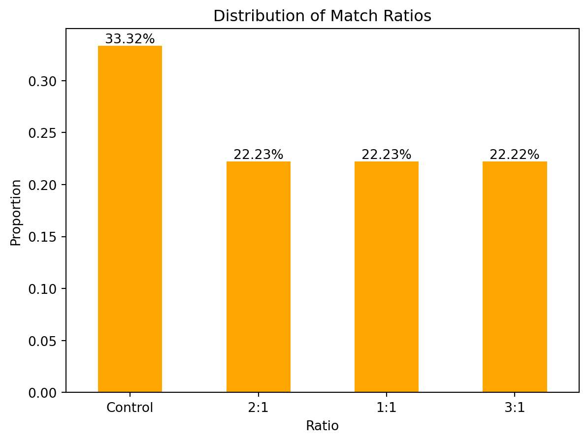
The bar chart indicates that approximately 33.32% of individuals belonged to the “control” group, while the 1:1, 2:1, and 3:1 match ratios each accounted for about 22.23% of the sample.
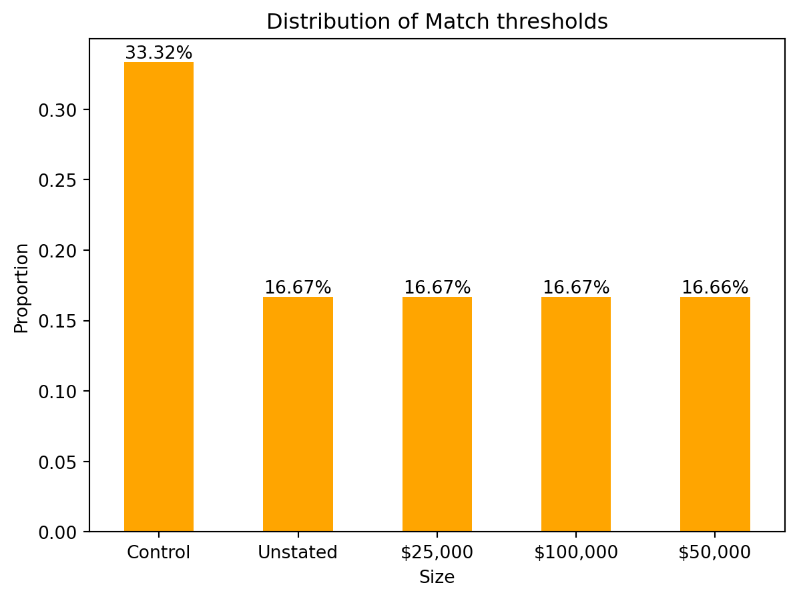
The bar chart shows that approximately 33.32% of individuals belonged to the “control” group as well, while the unstated, $25,000, $50,000, and $100,00 match thresholds each accounted for about 16.66% of the sample.
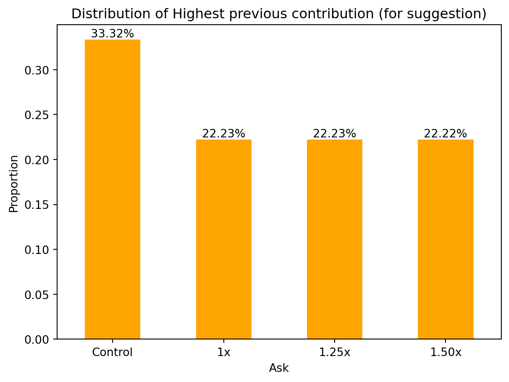
The bar chart illustrates that roughly 33.32% of individuals were assigned to the control group, whereas each of the groups receiving suggested donation amounts of 1x, 1.25x, and 1.50x their previous highest contribution represented approximately 22.23% of the sample.
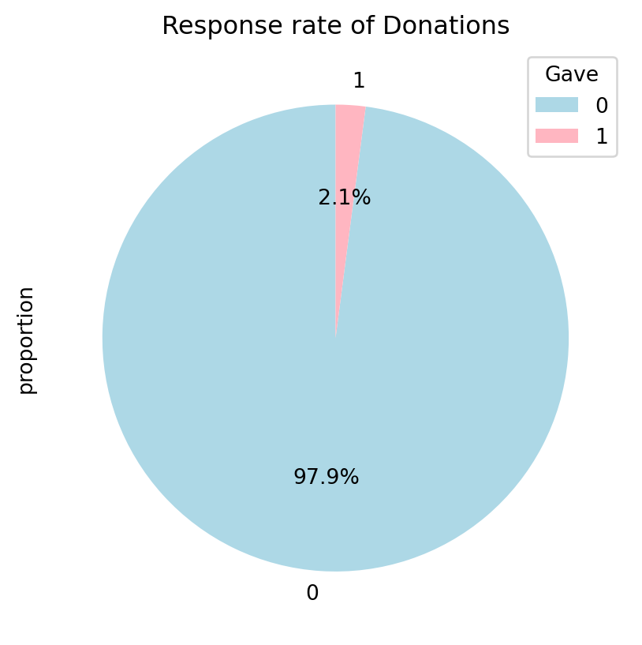
The pie chart shows that 2.1% of individuals made a donation of any amount.
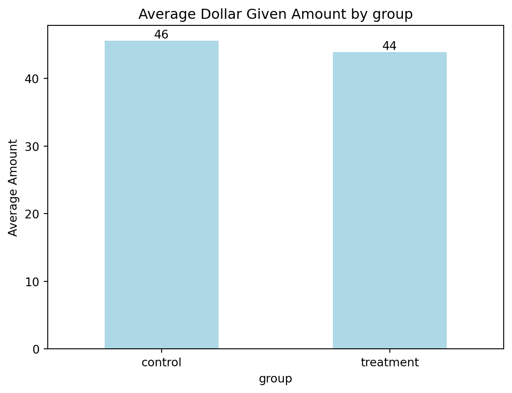
The average donation amounts for the control and treatment groups are similar, at $46 and $44 respectively.
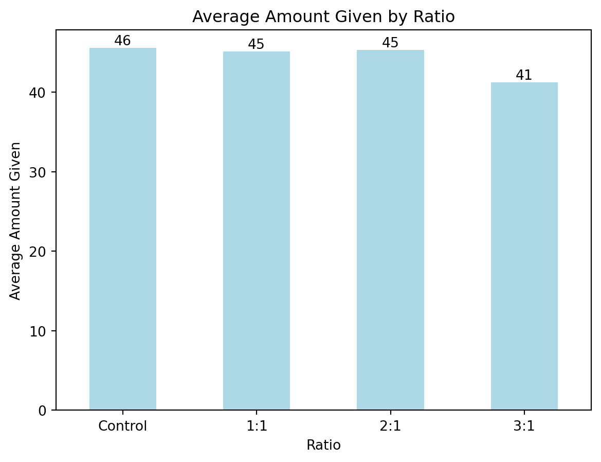
Based on the match ratios, we can see that the control group has the highest average donation amount at $46. The 1:1 and 2:1 match groups follow closely, both averaging $45, while the 3:1 group has the lowest average, at only $41.
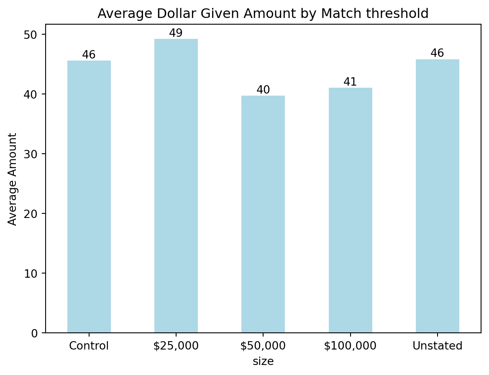
The bar chart illustrates the average donation amount across different match threshold conditions. Among all groups, the $25,000 match threshold yielded the highest average donation at $49. Both the control group and the group with an unstated match threshold followed, with an average donation of $46. In contrast, the $50,000 and $100,000 thresholds resulted in lower average donations, at $40 and $41 respectively. These findings suggest that a lower or unspecified match cap may be more effective at encouraging larger individual donations compared to higher threshold amounts.
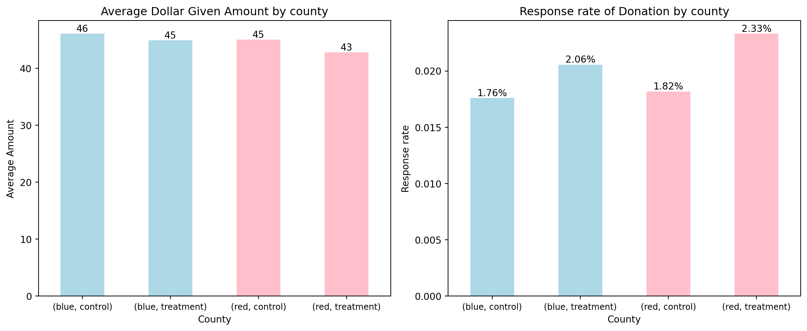
The charts show the average donation amount and response rate across counties categorized by political affiliation (blue vs. red) and treatment type (control vs. matching grant).
In terms of average donation amount, the blue-control group gave the most ($46), while the treatment groups in both counties had slightly lower averages—$45 in blue counties and $43 in red counties. Notably, the red-treatment group had the lowest average donation.
As for the response rate, matching treatments increased participation in both regions. In blue counties, the response rose from 1.76% to 2.06%, while in red counties it increased more significantly from 1.82% to 2.33%.
Overall, while matching grants improved the likelihood of donating, they did not necessarily increase the amount donated per person. The effect on response rate was particularly strong in red counties.
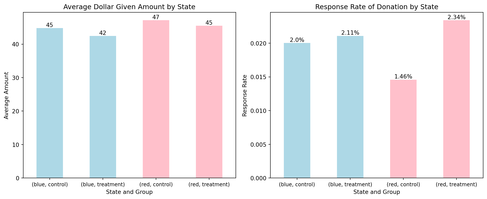
The charts provide insights into donation behavior across political states (blue vs. red) and treatment conditions (control vs. matching grant).
In terms of average donation amount, the highest contribution was observed in the red-control group at $47, followed by both the blue-control and red-treatment groups at $45. The blue-treatment group recorded the lowest average at $42, suggesting that matching treatments may slightly reduce the average donation amount in blue states.
Looking at the response rate, matching grants had a positive effect in both political contexts, but the effect was particularly strong in red states. The red-treatment group showed the highest response rate at 2.34%, a significant increase from 1.46% in the red-control group. In blue states, the increase was more modest—from 2.0% to 2.11%.
These findings reinforce a key insight from Karlan and List (2007): matching grants boost participation (response rate), especially in red states, but do not necessarily lead to higher donation amounts per individual.
Balance Test
As an ad hoc test of the randomization mechanism, I provide a series of tests that compare aspects of the treatment and control groups to assess whether they are statistically significantly different from one another.
- non-outcome variable:
mrm2
from scipy import stats
# group by treatment and control
treated_mrm2 = karlan_df[karlan_df['group'] == "treatment"]['mrm2'].dropna()
control_mrm2 = karlan_df[karlan_df['group'] == "control"]['mrm2'].dropna()
# t-test
t_stat, p_val = stats.ttest_ind(treated_mrm2, control_mrm2, equal_var=True)
print(f"t-statistic: {t_stat:.3f}, p-value: {p_val:.3f}")t-statistic: 0.119, p-value: 0.905reg = rsm.model.regress({"dakarlan": karlan_df}, rvar="treatment", evar="mrm2")
reg.summary(fit=False)Linear regression (OLS)
Data : dakarlan
Response variable : treatment
Explanatory variables: mrm2
Null hyp.: the effect of x on treatment is zero
Alt. hyp.: the effect of x on treatment is not zero
coefficient std.error t.value p.value
Intercept 0.667 0.003 215.360 < .001 ***
mrm2 0.000 0.000 0.119 0.905
Signif. codes: 0 '***' 0.001 '**' 0.01 '*' 0.05 '.' 0.1 ' ' 1- non-outcome variable:
median_hhincome
treated_mh = karlan_df[karlan_df['group'] == "treatment"]['median_hhincome'].dropna()
control_mh = karlan_df[karlan_df['group'] == "control"]['median_hhincome'].dropna()
t_stat, p_val = stats.ttest_ind(treated_mh, control_mh, equal_var=True)
print(f"t-statistic: {t_stat:.3f}, p-value: {p_val:.3f}")t-statistic: -0.742, p-value: 0.458reg = rsm.model.regress({"dakarlan": karlan_df}, rvar="treatment", evar="median_hhincome")
reg.summary(fit=False)Linear regression (OLS)
Data : dakarlan
Response variable : treatment
Explanatory variables: median_hhincome
Null hyp.: the effect of x on treatment is zero
Alt. hyp.: the effect of x on treatment is not zero
coefficient std.error t.value p.value
Intercept 0.671 0.006 116.647 < .001 ***
median_hhincome -0.000 0.000 -0.742 0.458
Signif. codes: 0 '***' 0.001 '**' 0.01 '*' 0.05 '.' 0.1 ' ' 1- non-outcome variable:
freq
treated_freq = karlan_df[karlan_df['group'] == "treatment"]['freq'].dropna()
control_freq = karlan_df[karlan_df['group'] == "control"]['freq'].dropna()
t_stat, p_val = stats.ttest_ind(treated_freq, control_freq, equal_var=True)
print(f"t-statistic: {t_stat:.3f}, p-value: {p_val:.3f}")t-statistic: -0.111, p-value: 0.912reg = rsm.model.regress({"karlan": karlan_df}, rvar="treatment", evar="freq")
reg.summary(fit=False)Linear regression (OLS)
Data : karlan
Response variable : treatment
Explanatory variables: freq
Null hyp.: the effect of x on treatment is zero
Alt. hyp.: the effect of x on treatment is not zero
coefficient std.error t.value p.value
Intercept 0.667 0.003 258.746 < .001 ***
freq -0.000 0.000 -0.111 0.912
Signif. codes: 0 '***' 0.001 '**' 0.01 '*' 0.05 '.' 0.1 ' ' 1- non-outcome variable:
female
treated_female = karlan_df[karlan_df["group"] == "treatment"]["female"].dropna()
control_female = karlan_df[karlan_df["group"] == "control"]["female"].dropna()
t_test, p_val = stats.ttest_ind(treated_female, control_female, equal_var=True)
print(f"t-statistic: {t_test:.3f}, p-value: {p_val:.3f}")t-statistic: -1.758, p-value: 0.079reg = rsm.model.regress({"dakarlan": karlan_df}, rvar="treatment", evar="female")
reg.summary(fit=False)Linear regression (OLS)
Data : dakarlan
Response variable : treatment
Explanatory variables: female
Null hyp.: the effect of x on treatment is zero
Alt. hyp.: the effect of x on treatment is not zero
coefficient std.error t.value p.value
Intercept 0.669 0.003 266.731 < .001 ***
female -0.008 0.005 -1.758 0.079 .
Signif. codes: 0 '***' 0.001 '**' 0.01 '*' 0.05 '.' 0.1 ' ' 1To assess the validity of the random assignment, we tested several non-outcome variables—mrm2, median_hhincome, freq, and female—for balance between the treatment and control groups. Each variable was analyzed using both an independent-samples t-test and a linear regression, with the treatment assignment as the dependent variable. Across all tests, there were no statistically significant differences at the 95% confidence level (all p-values > 0.05), suggesting that the two groups were comparable in terms of their baseline characteristics.
One exception worth noting is the variable female, which showed a p-value of 0.079—non-significant at the conventional 5% threshold but approaching marginal significance at the 10% level. This variable may be considered in further robustness checks as a potential confounder.
These findings mirror the results presented in Table 1 of Karlan and List (2007), which serves to confirm the success of the randomization. By establishing that the treatment and control groups are balanced on observable covariates, we strengthen the internal validity of the experimental design and provide a solid foundation for interpreting causal treatment effects in subsequent analyses.
Experimental Results
Charitable Contribution Made
First, I analyze whether matched donations lead to an increased response rate of making a donation.
gave_by_group = karlan_df.groupby("group")["gave"].value_counts(normalize=True).unstack()
gave_by_group.plot(kind="bar", stacked=True, color=("lightblue", "lightpink"))
plt.title("Proportation of people who denoted by Group")
plt.xlabel("Group")
plt.ylabel("Proportion")
plt.xticks(rotation=0)
plt.legend(title="Gave", loc="upper right")
for i, (gave_by_group, row) in enumerate(gave_by_group.iterrows()):
for j, value in enumerate(row):
if j == 1:
plt.text(i, value+1, f"{value*100:.1f}%", ha="center", va="top", fontsize=10)
else:
plt.text(i, value/2, f"{value*100:.1f}%", ha="center", va="center", fontsize=10)
plt.show()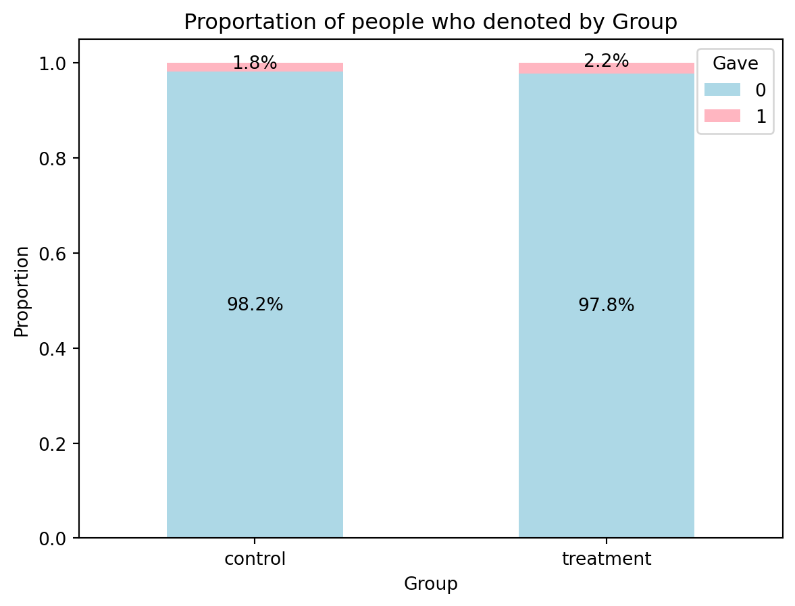
This bar chart shows the proportion of people who donated, broken down by group. We can see that 1.8% of individuals in the control group made a donation, compared to 2.2% in the treatment group.
treated_gave = karlan_df[karlan_df['group'] == "treatment"]['gave'].dropna()
control_gave = karlan_df[karlan_df['group'] == "control"]['gave'].dropna()
t_stat, p_val = stats.ttest_ind(treated_gave, control_gave, equal_var=True)
print(f"t-statistic: {t_stat:.3f}, p-value: {p_val:.3f}")t-statistic: 3.101, p-value: 0.002Statistical Results & Interpretation
The t-test comparing donation rates between the treatment and control groups produced a statistically significant result (p-value = 0.002), indicating a meaningful difference in the likelihood of making a donation. Specifically, individuals who received the matching grant treatment were significantly more likely to donate than those who received the standard fundraising letter.
Together, these results align with Table 2A, Panel A in Karlan and List (2007), which shows that the matching grant treatment increases the donation response rate from approximately 1.8% in the control group to 2.2% in the treatment group. Although this change may appear small in absolute terms, it is statistically reliable and meaningful in large-scale fundraising.
What We Learn About Human Behavior
These findings suggest that even simple changes in how charitable giving opportunities are framed—such as the use of a matching grant—can significantly influence behavior. People appear to be more willing to give when they perceive that their contribution will be amplified or matched by another donor. This reflects the importance of social cues and perceived impact in motivating altruistic behavior, and highlights how thoughtfully designed messages can boost participation in public good provision.
Probit Regression Summary
import statsmodels.api as sm
from statsmodels.discrete.discrete_model import Probit
X = sm.add_constant(karlan_df["treatment"])
probit_model = Probit(karlan_df["gave"], X).fit()
print(probit_model.summary())Optimization terminated successfully.
Current function value: 0.100443
Iterations 7
Probit Regression Results
==============================================================================
Dep. Variable: gave No. Observations: 50083
Model: Probit Df Residuals: 50081
Method: MLE Df Model: 1
Date: Thu, 24 Apr 2025 Pseudo R-squ.: 0.0009783
Time: 11:08:39 Log-Likelihood: -5030.5
converged: True LL-Null: -5035.4
Covariance Type: nonrobust LLR p-value: 0.001696
==============================================================================
coef std err z P>|z| [0.025 0.975]
------------------------------------------------------------------------------
const -2.1001 0.023 -90.073 0.000 -2.146 -2.054
treatment 0.0868 0.028 3.113 0.002 0.032 0.141
==============================================================================To replicate the results presented in Table 3, Column 1 of Karlan and List (2007), I conducted a probit regression where the outcome variable was whether an individual made any charitable donation, and the explanatory variable was assignment to the treatment or control group. The regression results indicate that assignment to the treatment group significantly increased the likelihood of donating.
The estimated coefficient on the treatment variable was 0.0868, with a p-value of 0.002, indicating strong statistical significance at the 1% level. This positive and significant result aligns closely with the original paper’s findings, where the authors report a similar treatment effect of approximately 0.087.
These findings confirm that the treatment intervention—providing a matching grant—has a statistically meaningful impact on charitable behavior, increasing the probability that individuals choose to give. The successful replication supports the robustness of the original study’s conclusion: that subtle framing strategies in fundraising can effectively encourage higher participation in charitable giving.
Differences between Match Rates
Next, I assess the effectiveness of different sizes of matched donations on the response rate.
ratio_gave = karlan_df[karlan_df["ratio"] == 1]["gave"].dropna()
ratio2_gave = karlan_df[karlan_df["ratio"] == 2]["gave"].dropna()
ratio3_gave = karlan_df[karlan_df["ratio"] == 3]["gave"].dropna()
ratio_control_gave = karlan_df[karlan_df["ratio"] == "Control"]["gave"].dropna()
pairs = [
("ratio1 & ratio2", ratio_gave, ratio2_gave),
("ratio1 & ratio3", ratio_gave, ratio3_gave),
("ratio1 & control", ratio_gave, ratio_control_gave),
("ratio2 & ratio3", ratio2_gave, ratio3_gave),
("ratio2 & control", ratio2_gave, ratio_control_gave),
("ratio3 & control", ratio3_gave, ratio_control_gave),
]
for label, group1, group2 in pairs:
t_stat, p_val = stats.ttest_ind(group1, group2, equal_var=True)
print(f"{label}: t-statistic: {t_stat:.3f}, p-value: {p_val:.3f}")ratio1 & ratio2: t-statistic: -0.965, p-value: 0.335
ratio1 & ratio3: t-statistic: -1.015, p-value: 0.310
ratio1 & control: t-statistic: 1.730, p-value: 0.084
ratio2 & ratio3: t-statistic: -0.050, p-value: 0.960
ratio2 & control: t-statistic: 2.804, p-value: 0.005
ratio3 & control: t-statistic: 2.859, p-value: 0.004Match Ratio T-Test Summary
To evaluate whether the size of the match ratio influences charitable behavior, a series of t-tests were conducted comparing donation rates across different match treatments (1:1, 2:1, 3:1) and a control group. This analysis was designed to test the authors’ suggestion in the paper that larger match ratios do not necessarily lead to higher donation rates.
The results show no statistically significant differences in donation likelihood between the 1:1, 2:1, and 3:1 match groups (all p-values > 0.3). This suggests that increasing the match ratio does not significantly increase the probability that someone will donate, relative to the baseline 1:1 offer.
However, when comparing each match ratio group to the control group, both the 2:1 and 3:1 ratios led to statistically significant increases in donation rates (p = 0.005 and p = 0.004, respectively), whereas the 1:1 vs. control difference was not significant (p = 0.084).
These findings support the authors’ claim on page 8 of the paper that, although offering a match increases the probability of donation, increasing the match ratio beyond 1:1 does not further enhance donation behavior. In other words, it is the presence of a match, rather than its generosity, that seems to matter most.
reg = rsm.model.regress({"karlan": karlan_df}, rvar="gave", evar="ratio")
reg.summary(fit=False)Linear regression (OLS)
Data : karlan
Response variable : gave
Explanatory variables: ratio
Null hyp.: the effect of x on gave is zero
Alt. hyp.: the effect of x on gave is not zero
coefficient std.error t.value p.value
Intercept 0.018 0.001 16.225 < .001 ***
ratio[1] 0.003 0.002 1.661 0.097 .
ratio[2] 0.005 0.002 2.744 0.006 **
ratio[3] 0.005 0.002 2.802 0.005 **
Signif. codes: 0 '***' 0.001 '**' 0.01 '*' 0.05 '.' 0.1 ' ' 1Regression Summary: Match Ratio and Donation Behavior
To further assess whether the size of the match ratio affects donation behavior, I ran a linear regression using indicator variables for each match ratio group (ratio1, ratio2, and ratio3) to predict the probability of making a donation (gave). The regression results reveal that the match ratio does have a measurable impact on donation rates.
The intercept of 0.018 represents the baseline donation rate for the control group (1.8%). Compared to this baseline: • The 1:1 match (ratio1) increased donation rates by 0.3 percentage points, but this effect is not statistically significant (p = 0.097). • The 2:1 and 3:1 match groups (ratio2 and ratio3) both show statistically significant increases of 0.5 percentage points (p = 0.006 and p = 0.005, respectively).
These findings align with the earlier t-test results, reinforcing the conclusion that larger match ratios (2:1 and 3:1) lead to significantly higher response rates compared to the control group, whereas the 1:1 match has a smaller and statistically weaker effect.
Taken together, the regression analysis supports the interpretation in the original paper that while offering a match increases donations, increasing the generosity of the match beyond 1:1 may yield modest but statistically significant gains. However, the differences between match ratios themselves remain relatively small.
response_rate_ratio1 = karlan_df[karlan_df["ratio"] == 1]["gave"].mean().round(4)
response_rate_ratio2 = karlan_df[karlan_df["ratio"] == 2]["gave"].mean().round(4)
response_rate_ratio3 = karlan_df[karlan_df["ratio"] == 3]["gave"].mean().round(4)
response_rate_control = karlan_df[karlan_df["ratio"] == "Control"]["gave"].mean().round(4)
response_rate = pd.Series({
"ratio1": response_rate_ratio1,
"ratio2": response_rate_ratio2,
"ratio3": response_rate_ratio3,
"control": response_rate_control
})
response_rate
response_rate.plot(kind="bar", color="lightblue")
plt.title("Response Rate by Ratio")
plt.xlabel("Ratio")
plt.ylabel("Response Rate")
plt.xticks(rotation=0)
for i, value in enumerate(response_rate):
plt.text(i, value, f"{value*100:.2f}%", ha="center", va="bottom", fontsize=10)
plt.show()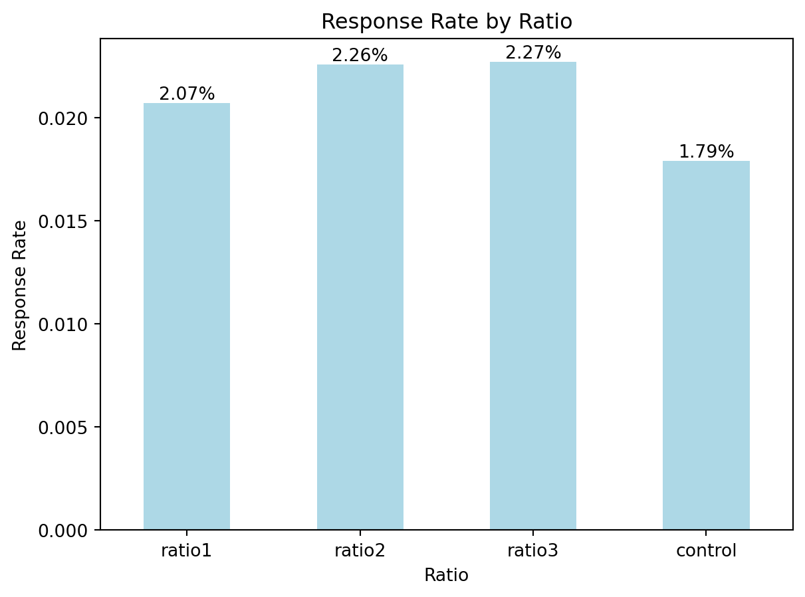
Summary of Response Rate by Match Ratio:
To evaluate the effectiveness of different match ratios on donation behavior, I calculated the donation response rates for the control group and each treatment group (1:1, 2:1, and 3:1 match ratios). The results reveal a clear pattern: any match treatment increases the likelihood of donation compared to no match, but increasing the match ratio does not substantially improve the response rate beyond the baseline 1:1 match. • Control group response rate: 1.79% • 1:1 match (ratio1): 2.07% • 2:1 match (ratio2): 2.26% • 3:1 match (ratio3): 2.27%
The increase from the control group to any treatment group is notable—about 0.3% to 0.5 percentage points—confirming that offering a matching grant increases participation. However, the differences among the 1:1, 2:1, and 3:1 ratios themselves are minimal, with a maximum difference of just 0.2 percentage points, suggesting diminishing returns to increasing the generosity of the match.
These findings align with the authors’ conclusion in the paper that the presence of a match matters more than the size of the match. From a practical perspective, this implies that organizations may not need to offer high match ratios to achieve significant gains in donor participation.
Size of Charitable Contribution
In this subsection, I analyze the effect of the size of matched donation on the size of the charitable contribution.
treated_amount = karlan_df[karlan_df['group'] == "treatment"]['amount'].dropna()
control_amount = karlan_df[karlan_df['group'] == "control"]['amount'].dropna()
t_stat, p_val = stats.ttest_ind(treated_amount, control_amount, equal_var=True)
print(f"t-statistic: {t_stat:.3f}, p-value: {p_val:.3f}")t-statistic: 1.861, p-value: 0.063Does treatment affect the average donation amount?
In the first part of the analysis, a t-test was used to compare the donation amounts between the treatment and control groups. The results show that the treatment group donated slightly more on average than the control group, with a t-statistic of 1.861 and a p-value of 0.063. This value is close to, but does not reach, the conventional 5% threshold for statistical significance.
This suggests that the matching grant treatment may have some effect on the amount donated, but the evidence is not strong enough to confirm a clear impact. In other words, we find weak evidence that the treatment could increase the average donation amount, but it does not support a strong causal conclusion.
reg = rsm.model.regress({"karlan": karlan_df[karlan_df["gave"] == 1]}, rvar="treatment", evar="amount")
reg.summary(fit=False)Linear regression (OLS)
Data : karlan
Response variable : treatment
Explanatory variables: amount
Null hyp.: the effect of x on treatment is zero
Alt. hyp.: the effect of x on treatment is not zero
coefficient std.error t.value p.value
Intercept 0.72 0.021 35.055 < .001 ***
amount -0.00 0.000 -0.581 0.561
Signif. codes: 0 '***' 0.001 '**' 0.01 '*' 0.05 '.' 0.1 ' ' 1Among donors only, does treatment affect the donation amount?
In the second part of the analysis, a linear regression was conducted using only those individuals who made a donation, in order to assess whether the treatment influenced the amount donated among actual donors. The result shows that the coefficient on treatment is essentially zero (p = 0.561), indicating no significant relationship between treatment status and donation amount among those who gave.
This implies that while the matching grant treatment may encourage more people to donate, it does not significantly affect how much they donate once they’ve decided to give. The primary effect of the treatment appears to lie in influencing the decision to donate, not the size of the donation.
Additionally, because this analysis is limited to donors only and treatment is not randomly assigned within this subset (it’s conditioned on gave = 1), the result cannot be interpreted causally, and should be treated as descriptive.
treated_gave_amount = karlan_df[(karlan_df["group"] == "treatment") & (karlan_df['gave'] == 1)]['amount'].dropna()
avg_treated_gave_amount = treated_gave_amount.mean()
control_gave_amount = karlan_df[(karlan_df["group"] == "control") & (karlan_df['gave'] == 1)]['amount'].dropna()
avg_control_gave_amount = control_gave_amount.mean()
fig, axes = plt.subplots(1, 2, figsize=(8, 4), sharey=True)
# Plot for Control Group
control_gave_amount.plot(kind="hist", bins=20, color="lightblue", alpha=0.7, ax=axes[0])
axes[0].axvline(avg_control_gave_amount, color="red", linestyle="--", linewidth=2, label=f"Mean: {avg_control_gave_amount:.2f}")
axes[0].legend()
axes[0].set_title("Distribution of Gave Amount for Control Group", fontsize=10)
axes[0].set_xlabel("Amount")
axes[0].set_ylabel("Frequency")
# Plot for Treatment Group
treated_gave_amount.plot(kind="hist", bins=20, color="lightblue", alpha=0.7, ax=axes[1])
axes[1].axvline(avg_treated_gave_amount, color="red", linestyle="--", linewidth=2, label=f"Mean: {avg_treated_gave_amount:.2f}")
axes[1].legend()
axes[1].set_title("Distribution of Gave Amount for Treatment Group", fontsize=10)
axes[1].set_xlabel("Amount")
plt.tight_layout()
plt.show()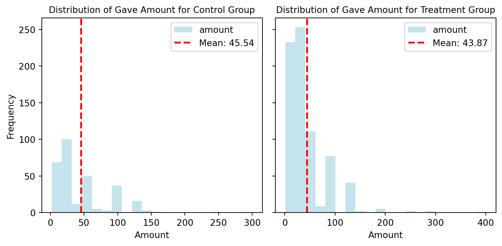
Simulation Experiment
As a reminder of how the t-statistic “works,” in this section I use simulation to demonstrate the Law of Large Numbers and the Central Limit Theorem.
Suppose the true distribution of respondents who do not get a charitable donation match is Bernoulli with probability p=0.018 that a donation is made.
Further suppose that the true distribution of respondents who do get a charitable donation match of any size is Bernoulli with probability p=0.022 that a donation is made.
Law of Large Numbers Simulation
The plot below visualizes the Law of Large Numbers using a simulation of donation behavior. Specifically, I simulated 100,000 random draws from the control group distribution and 10,000 random draws from the treatment group distribution, then calculated a vector of 10,000 differences between a randomly drawn treatment value and a randomly drawn control value. The chart plots the cumulative average of those differences as the number of simulations increases.
The red dashed line represents the true average difference in means, which is 0.004. As shown in the graph, the cumulative average fluctuates more heavily at the beginning when the number of simulations is small, but gradually stabilizes and converges toward the true value as the number of simulations increases. This behavior is a direct demonstration of the Law of Large Numbers, which states that the average of a large number of independent observations will converge to the expected value.
import numpy as np
import matplotlib.pyplot as plt
# Parameters Setting
np.random.seed(0)
p_control = 0.018
p_treatment = 0.022
n_control = 100_000
n_treatment = 10_000
# Simulate donatioin outcomes (Bernoulli distribution)
control = np.random.binomial(1, p_control, size=n_control)
treatment = np.random.binomial(1, p_treatment, size=n_treatment)
# Sample the first 10,000 control observations to match treatment
control_sample = control[:n_treatment]
# Difference = treatment - control
diffs = treatment - control_sample
# Calculate the cumulative average of differences
cumulative_avg = np.cumsum(diffs) / np.arange(1, n_treatment + 1)
# Plot the cumulative average and the true difference line
plt.figure(figsize=(8, 4))
plt.plot(cumulative_avg, label="Cumulative average of difference", color="lightblue")
plt.axhline(y=0.004, color="red", linestyle="--", label="True difference (0.004)")
plt.xlabel("Number of Simulations")
plt.ylabel("Cumulative Average")
plt.title("Law of Large Numbers Simulation")
plt.legend()
plt.tight_layout()
plt.show()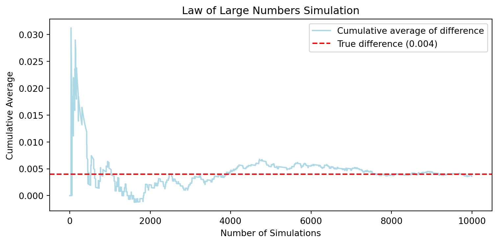
Conclusion
This simulation confirms that the cumulative average difference between treatment and control groups indeed approaches the true difference in means as the number of samples grows. It visually reinforces a key statistical principle: with enough data, we can reliably estimate underlying population parameters, even when working with noisy or variable outcomes.
Central Limit Theorem Simulation
The set of histograms above illustrates the Central Limit Theorem (CLT) in action by showing how the distribution of sample mean differences (treatment minus control) changes with increasing sample sizes. For each sample size (50, 200, 500, and 1000), I repeatedly drew random samples from the treatment and control distributions, computed their mean difference, and repeated this process 1000 times to generate a distribution of average differences.
- Sample size = 50: The distribution is wide and irregular, showing high variability. The zero line lies close to the center but not perfectly symmetric, and the distribution appears somewhat dispersed.
- Sample size = 200: The histogram begins to resemble a normal distribution. The peak becomes more centered around zero, and the variance shrinks.
- Sample size = 500: The distribution is tighter and more symmetric. Zero is clearly in the center, showing reduced sampling variability.
- Sample size = 1000: The distribution becomes even more narrow and bell-shaped, strongly centered around zero. The noise has largely averaged out.
import numpy as np
import matplotlib.pyplot as plt
# Parameters Setting
np.random.seed(42)
p_control = 0.018
p_treatment = 0.022
sample_sizes = [50, 200, 500, 1000]
n_simulations = 1000
fig, axes = plt.subplots(2, 2, figsize=(8, 8))
axes = axes.flatten()
for idx, n in enumerate(sample_sizes):
diffs = []
# Simulate n_simulations times
for _ in range(n_simulations):
control = np.random.binomial(1, p_control, n)
treatment = np.random.binomial(1, p_treatment, n)
diff = np.mean(treatment) - np.mean(control)
diffs.append(diff)
# Plot the histogram of differences
ax = axes[idx]
ax.hist(diffs, bins=30, color="skyblue", edgecolor="black", alpha=0.75)
ax.axvline(x=0, color="red", linestyle="--", linewidth=1.5, label="Zero")
ax.set_title(f"Sample Size = {n}")
ax.set_xlabel("Mean Difference (Treatment - Control)")
ax.set_ylabel("Frequency")
ax.legend()
# Add a title for the entire figure
plt.suptitle("Central Limit Theorem Simulation\nEffect of Sample Size on Distribution of Mean Differences", fontsize=14)
plt.tight_layout(rect=[0, 0, 1, 0.95])
plt.show()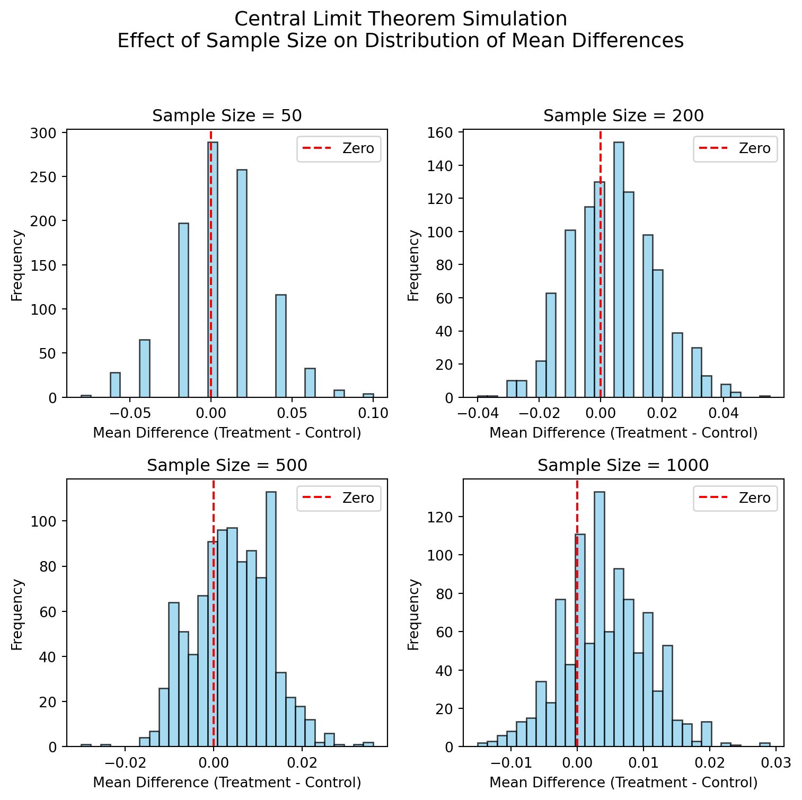
Conclusion
These plots clearly demonstrate the Central Limit Theorem: as the sample size increases, the distribution of the sample mean differences becomes more normal and converges toward the true mean (which is close to zero in this case). Importantly, zero is consistently near the center of the distribution, indicating that under random sampling, there is no systematic difference between the treatment and control means—exactly what we expect under the null hypothesis.
This reinforces a key statistical principle: larger sample sizes lead to more stable and reliable estimates, and support valid inference based on the sampling distribution of the mean.